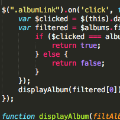
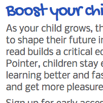

The Talent Show
About: I completed this in 14 days using React with Backbone collections and models. I am also using a PostgrSQL database with KNEX and bookshelf.
Likes: Completing my project, or at least completing version 1 gave me a profound sense of accomplishment. I learned a lot, fast. I really enjoyed the backend routing and database work.
Challenges: I found styling most challenging and frustrating.

Photo Album
About: I initially created this using multiple click event listeners which repeated A Lot of code. I did it over one weekend on day 18 of my front-end learnng journey. I created a large collection and used JQuery. Likes: I LOVE this project because it marks the point of understanding for me. I knew when I looked at the challenge that I could accomplish it. And on day 25, I created this DRY version! Challenges: Styling will alway be a challenge, but from a code standpoint, it was finding a way to write it more efficiently.

Pointer App
About: This is our front-end class group project. We completed it in 6 days. It's purpose is to allow the user to highlight words as they are reading to help children learn to read.
Likes: I enjoyed working in a collaborative environment. We used React which makes collaboratin very easy. We also gained great experiece with Github.
Challenges: I was challenged learning the backend on this project. I found that I enjoy back end routing and database structure more than styling.